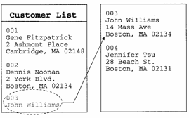
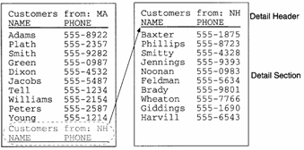

Keeping Things Together on a Page
There are two basic ways in which you can control where page breaks occur: You can set properties for individual sections and edit regions, and you can insert page breaks and conditional page breaks.
By setting section and edit region properties, you can set rules to control the locations of page breaks. For example, by checking the Keep together on page check box in the Detail Properties dialog box, you can prevent individual records from being split. When Alpha Anywhere arrives at a record that will not fit on the page, the entire record is carried over to the second page, as shown in the following diagram:

The Detail Properties dialog box also lets you specify the minimum number of detail records to keep with the header or footer. For example, you specify that at least one detail record should be kept with the header. If Alpha Anywhere cannot fit one record under the detail header, the header is carried over to the next page, as shown in the following diagram:

You can also keep entire groups together on the page by checking the Keep group together on page check box in the Group Properties dialog box. For example, you have a Report which groups customer-records by state. In cases where the group header, the group footer, and every section in between can fit on a single page, Alpha Anywhere positions the edit regions accordingly.
The following table summarizes the various keep-options, the names of the controls to set these options, and how you get to these controls:
|
Control Name |
Description |
To Access: |
|
Records with header |
Keeps a minimum number of records with the Detail Header edit region |
Select Report > Detail Properties. Click the Header/Footer tab. |
|
Records with footer |
Keeps a minimum number of records with the Detail Footer edit region |
Select Report > Detail Properties. Click the Header/Footer tab. |
|
Keep together on page |
Keeps individual records from being split across a page. |
Select Report > Region Properties. In the Regions dialog box, select Detail. In the Region Properties dialog box, click the Region tab. |
|
Keep with detail |
Keeps the Group Header with the Detail section. |
Select Report > Group Properties. In the Groups dialog box, select the appropriate group. In the Group Properties dialog box, click the Header/Footer tab. |
|
Keep group together on page |
Keeps the Group Header, the Group Footer, and every edit region between together on the page. |
Select Report > Group Properties. In the Groups dialog box, select the appropriate group. In the Group Properties dialog box, click the Region tab. |
See Also